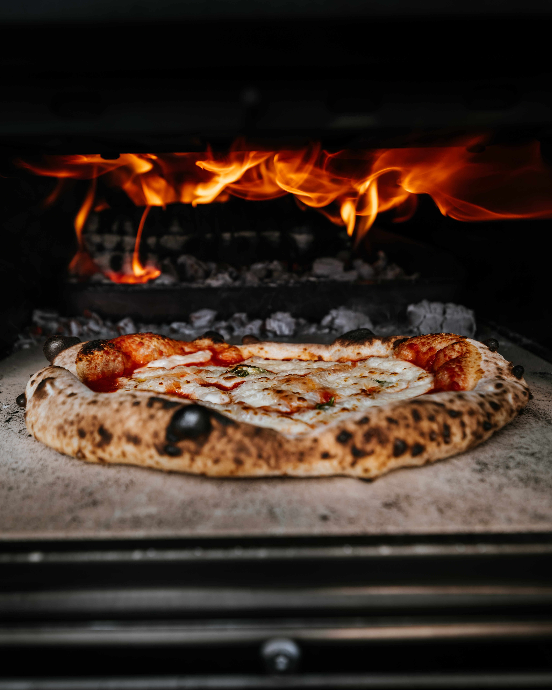

Hey, those premade frozen pizzas that you toss in the oven are great! But, sometimes you are looking for something just a little
more intersting. You could order out from your local pizza chain, but even that will get a little on the boring side. Well if you
are someone who likes DIY projects and are looking for a change up in your pizza routine, this one is for you!
A DIY homemade pepperoni pizza!
Contadina(R) Quick Pizza Sauce
- 1/2 (12 ounce) can of CONTADINA Tomato Paste
- 1 teaspoon of dried oregano, crushed
- 1 teaspoon of dried basil, crushed
- 1/2 teaspoon of garlic powder
- 1/2 teaspoon of onion powder
- 1/2 teaspoon of sugar
- 1/2 teaspoon of salt
- 1/4 teaspoon of black pepper
Fleischmann's Easy Pizza Crust
- 3 1/4 cups of all-purpose flour, or more as needed
- 2 (.25 ounce) envelopes of FLEISCHMANN'S Pizza Crust Yeast or RapidRise Yeast
- 1 tablespoon of sugar
- 1 1/2 teaspoons of salt
- 1 1/3 cups of very warm water (120 to 130 degrees F)
- 1/3 cup of oil
Toppings
- 1 (6 ounce) package of HORMEL Pepperoni
- 1 cup of shredded mozzarella cheese, or more to taste
- For sauce: Combine all sauce ingredients with 1/2 cup water in a medium bowl; set aside for flavors to develop while making crust.
Freeze remaining paste .
- For crusts: Combine 2 cups of flour with the dry yeast, sugar and salt. Add the water and oil and mix until well blended (about 1 minute).
Gradually add enough remaining flour slowly, until a soft, sticky dough ball is formed.
- Knead for about 4 minutes, on a floured surface, until dough is smooth and elastic. Add more flour, if needed.
(If using RapidRise Yeast, let dough rest, covered, for 10 minutes.)
- Divide dough in half. Pat each half (with floured hands) into a 12-inch greased pizza pan OR roll dough to fit pans.
- For pizzas: Preheat oven to 425 degrees F. Top crusts with sauce, pepperoni and cheese.
- Bake for 18 to 20 minutes until crusts are browned and cheese is bubbly.
For best results, rotate pizza pans between top and bottom oven racks halfway through baking.
Home